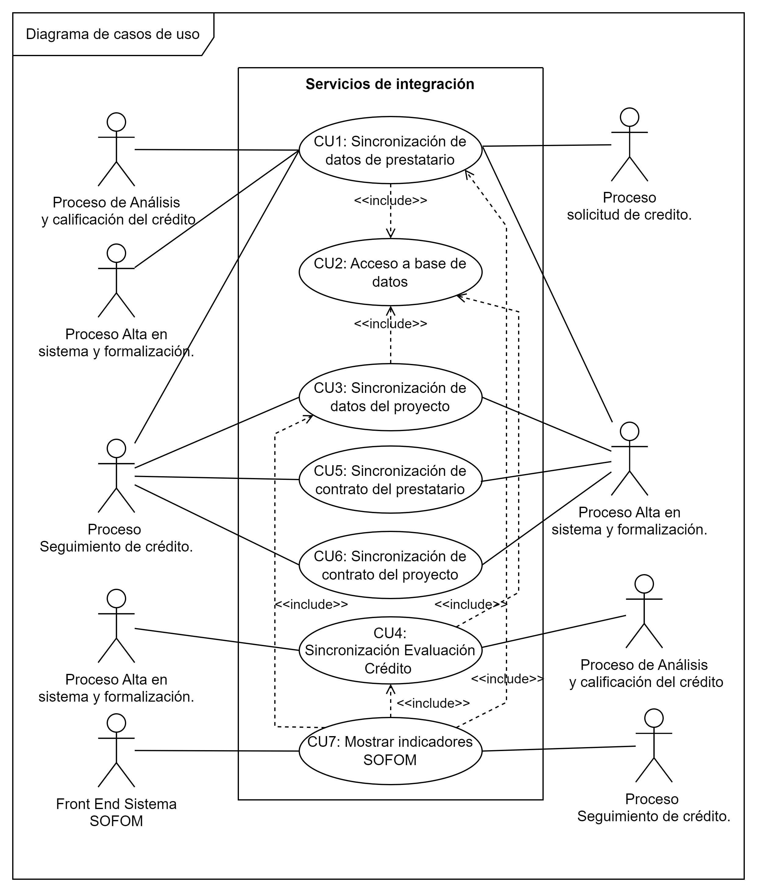
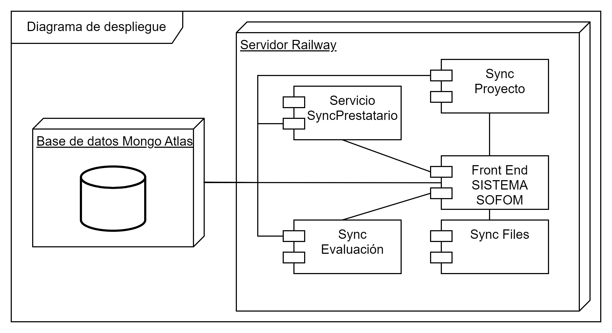

Marco de Servicios para entidades SOFOM (Descripción técnica del proyecto)
El mapa de navegación del sitio es el siguiente:
Introducción
Descripción del problema
La operación de una firma financiera (en este caso Sociedades Financieras de Objeto Múltiple (SOFOM)) es compleja debido a la gran cantidad de información y procesos involucrados. Los diferentes procesos pueden requerir diferentes herramientas y esas herramientas deben convivir por medio del intercambio de información. Sin embargo, se observa que existe una dependencia de herramientas tecnológicas por parte de las SOFOMES, las cuales no permiten el óptimo flujo de información, el problema se presenta cuando algunas herramientas tecnológicas o sistemas de información no pueden integrarse fácilmente y por lo tanto no generan la información requerida para la operación de la firma financiera.
Objetivo general
El objetivo general de este proyecto es realizar una integración de procesos de negocio en el dominio de las SOFOMES utilizando servicios Web.
Objetivos específicos
Los objetivos específicos que se plantearon para este trabajo de tesis son:
- Documentar procesos de negocios del dominio de SOFOM.
- Eliminar la dependencia entre procesos de negocio y las herramientas que se emplean.
Alcances
- Identificar los procesos de la SOFOM.
- Analizar los procesos para extraer los requerimientos de información.
- Analizar, diseñar e implementar un conjunto de servicios que atienda a los procesos.
Limitaciones
Debido a la cantidad de procesos de una SOFOM y la cantidad de tareas que corresponden a cada proceso, se implementarán los servicios que el tiempo permita, es decir, no se implementarán todos los servicios identificados.
Metodología de solución
Documentación de procesos de negocio
Procesos de Negocio:
Especificación de Requerimientos
| No. | ID | Descripción |
|---|---|---|
| 1 | R01 | El proceso de análisis y calificación del crédito debe poder acceder a los datos de los prestatarios. |
| 2 | R02 | El proceso de Alta en sistemas y formalización debe poder acceder a los datos de los prestatarios. |
| 3 | R03 | El proceso de Alta en sistemas y formalización debe poder acceder a la evaluación de crédito. |
| 4 | R04 | El responsable del proceso de Seguimiento de Crédito debe poder acceder a los datos de los prestatarios. |
| 5 | R05 | El sistema deberá mostrar al usuario el contrato del prestatario para su consulta. |
| 6 | R06 | El sistema deberá mostrar al usuario el contrato del proyecto para su consulta |
| 7 | R07 | El responsable del proceso de Seguimiento de Crédito debe poder acceder a los datos del proyecto. |
| 8 | R08 | El sistema deberá mostrar los indicadores del proceso “Alta en sistema y formalización” de acuerdo al anexo “Procesos de negocio Seguimiento de crédito SOFOM” documentación del proceso – indicadores. |
Analisis
A partir de los requerimientos se procedió a la etapa de análisis en donde se realizó un diagrama de casos de uso como se muestra en la siguiente figura:
A continuacion se explica unicamente el Caso de Uso 1 en la siguiente tabla:
Diseño
Se elaboraron cinco diagramas de clases para el diseño de los servicios
Tambien para el proyecto se realizo un diagrama de despliegue:
Codificación del marco de servicios web
Las tecnologias utilizadas son:
- JavaScript
- NodeJS
- Express
- MongoDB
- HTML
- CSS
- Bootstrap
- Java
- Spring Boot
- Python
- Flask